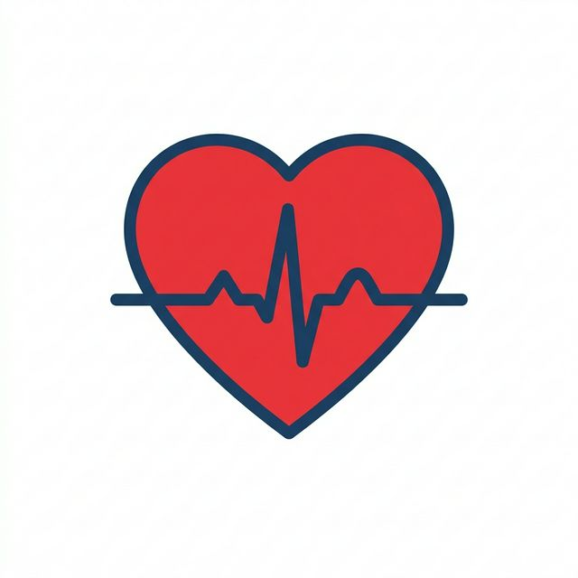
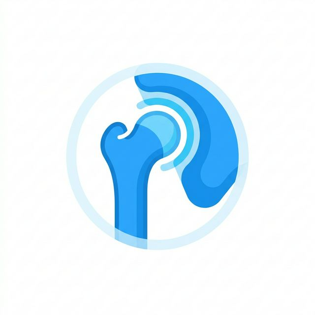
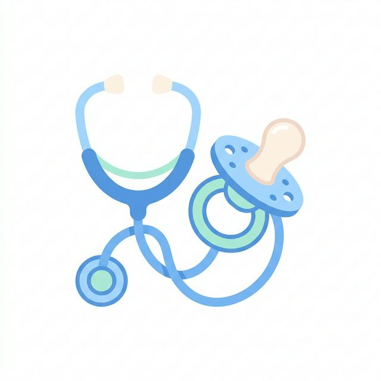
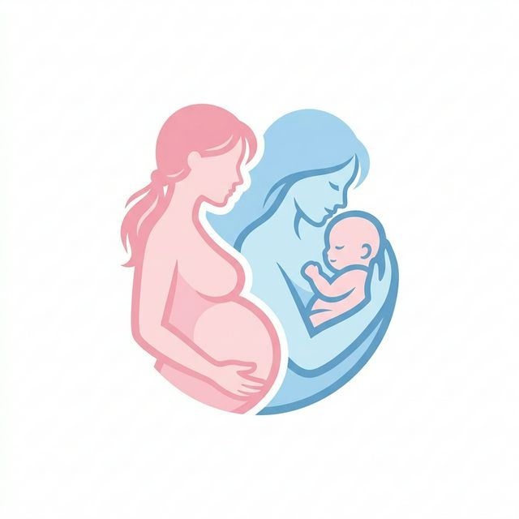

¿Cómo detectar un ACV a tiempo?
Conoce los síntomas clave (F.A.S.T) que podrían salvar una vida ante un Ataque Cerebrovascular.
Leer artículo completo →Salud, Equidad y Excelencia
Nuestra clínica presta servicios médicos de primera necesidad con tecnología de punta y un enfoque cálido y humano.
Atención Inmediata (Triage)Contamos con una red integral de expertos para resolver todas tus necesidades de salud.

Prevención, diagnóstico y tratamiento cardiovascular.

Rehabilitación y cirugía ortopédica integral.

Cuidado médico para niños y adolescentes.

Acompañamiento especializado durante el parto.
Somos parte de la principal red docente de salud del país. La Clínica Universitaria ha capacitado a generaciones de excelentes médicos y ha salvaguardado la vida de múltiples comunidades.
Contamos con profesionales en formación guiados exhaustivamente por especialistas internacionales.
Inspirados en los principales centros académicos de salud, somos un pionero polo de desarrollo científico. Colaboramos directamente con las facultades de Medicina y Ciencias para realizar ensayos clínicos de frontera.
Tus médicos no solo te tratan; también descubren y enseñan los tratamientos del mañana.
Descubra un tiempo estimado de espera sugerido según sus síntomas urgentes.
Mantente informado con nuestros artículos médicos redactados por los especialistas de Clínica Universitaria.
Conoce los síntomas clave (F.A.S.T) que podrían salvar una vida ante un Ataque Cerebrovascular.
Leer artículo completo →Los cardiólogos de nuestra clínica recomiendan 5 hábitos cruciales para proteger tu sistema cardiovascular.
Leer artículo completo →Nuevos talleres y charlas comunitarias enfocadas en el manejo efectivo del estrés y la ansiedad laboral.
Leer artículo completo →Sede Principal: Av. Salud Pública Universitaria 1234.
Mesa Central: +56 2 2000 0000
Reserva de Horas: +56 9 8000 1234
Comprometidos con el desarrollo médico y el bienestar de la comunidad desde 1999.